Warning
This content has been generated by machine translation. The translations are automated and have not undergone human review or validation.
5.2.2 Log monitoring using OCI Search service
OpenSearch and OpenDashboards will be forked from ElasticSearch and Cabana in 2021 and are operating as separate open source projects. OCI OpenSearch is a managed service provided by OCI.
Setting policy to use OCI Search service
Granting OCI Search service permission
Allow service opensearch to manage vnics in compartment <NETWORK_RESOURCES_COMPARTMENT>
Allow service opensearch to manage vcns in compartment <NETWORK_RESOURCES_COMPARTMENT>
Allow service opensearch to use subnets in compartment <NETWORK_RESOURCES_COMPARTMENT>
Allow service opensearch to use network-security-groups in compartment <NETWORK_RESOURCES_COMPARTMENT>
Granting OCI Search Service Management Permissions in Oracle Cloud Console
- Example when the group the user belongs to is SearchOpenSearchAdmins
Allow group SearchOpenSearchAdmins to manage opensearch-family in compartment <CLUSTER_RESOURCES_COMPARTMENT>
Create an OCI OpenSearch cluster
-
Log in to the Oracle Cloud Console.
-
Go to Databases > OpenSearch > Clusters from the top left hamburger menu.
-
Click the Create Cluster button to create a cluster.
-
Select the compartment location, name, and version to create.
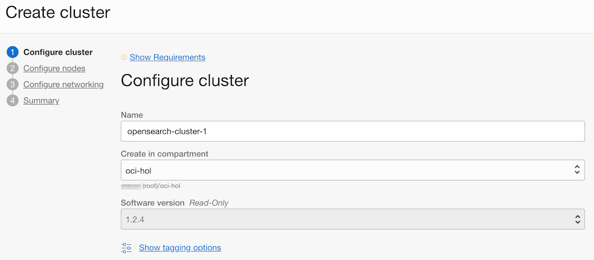
-
Select the node configuration to create. There are three possible configurations, here we choose the Development configuration.
- Development: 1 Master Node, 1 Data Node, 1 OpenSearch Dashboard Node
- Application Search, Log Analytics: 3 master nodes, 3 data nodes, 3 OpenSearch dashboard nodes are the same, but the data nodes have different CPU sizes.
- After selecting the configuration, all node sizes can be modified. You can also change the size after cluster creation.
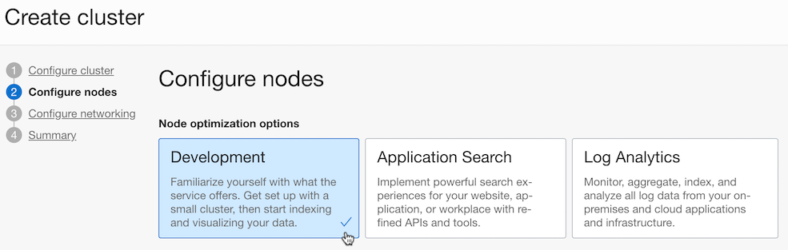
-
Set the subnets the cluster will use. Here, we have chosen the VCN and subnet already created when creating the OKE cluster for convenience.
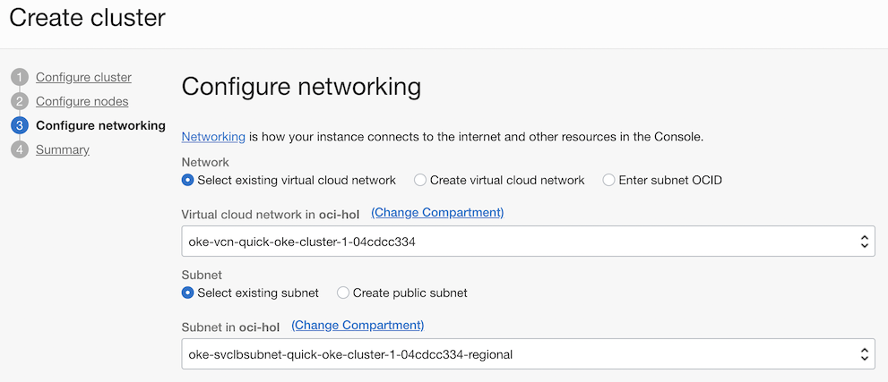
-
Confirm the configuration information to select and create the cluster.
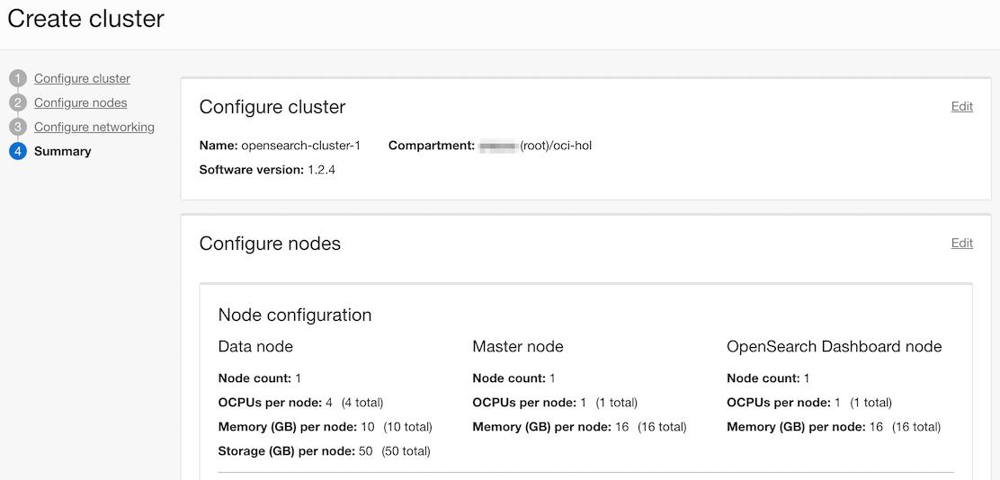
-
Based on the test date based on the development configuration, the creation time took about 20 minutes.
-
Created Cluster Information
- As you can see from the cluster information, both OpenSearch and OpenSearch Dashboard have only Private IP and Private FQDN. As of the end of May 2022, public IP is not yet supported.
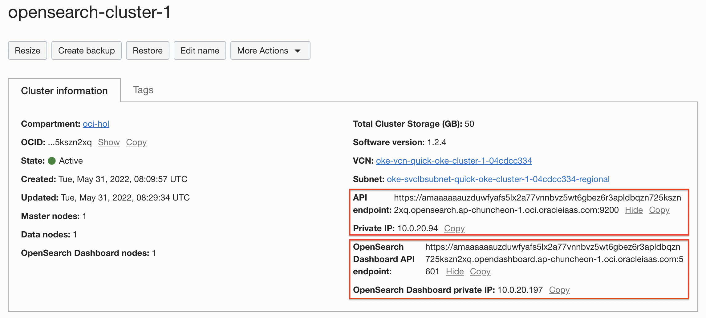
-
Check the OpenSearch API Endpoint, Private IP of the cluster and the API Endpoint and Private IP of the OpenSearch Dashboard.
Setting up to connect to a cluster
Create a JumpBox VM
OpenSearch Dashboard does not currently support Public IP. Create additional JumpBox VM with public IP to access OpenSearch Dashboard.
-
In Oracle Cloud Console, go to Compute > Instances from the top left hamburger menu.
-
Create a new Compute VM.
-
Name: ex) jumpbox
-
Networking: Select a VCN or Public Subnet that can access the created OpenSearch cluster and assign a public IP.
Ex) In this case, we used the same network as the OpenSearch cluster we created.
-
-
Add a security rule so that the jumpbox VM can access OpenSearch from the jumpbox VM.
- Ingress Rules
- In the example below, if the jumpbox is located in the subnet 10.0.20.0/24
Stateless Source IP Protocol Source Port Range Destination Port Range Description No 0.0.0.0/0 TCP All 22 SSH No 10.0.20.0/24 TCP All 5601 OpenSearch Dashboard No 10.0.20.0/24 TCP All 9200 OpenSearch API - Ingress Rules
OpenSearch Dashboard Connection Check
-
Access the OpenSearch Dashboard through the jumpbox VM through SSH tunneling.
- Based on OpenSearch Cluster information, if OpenSearch Dashboard private ip is 10.0.20.197
ssh -L 5601:10.0.20.197:5601 opc@jumpbox -
After connecting to the jumpbox VM, test whether it can connect to the Dashboard API Endpoint.
- If you can see the connection as shown below, you can see that the current self-signed certificate is being used.
$ ssh -L 5601:10.0.20.197:5601 opc@jumpbox Activate the web console with: systemctl enable --now cockpit.socket Last login: Fri Jun 3 04:51:54 2022 from 192.188.170.86 [opc@jumpbox ~]$ curl -v --insecure https://amaaaaaauzduwfyafs5lx2a77vnnbvz5wt6gbez6r3apldbqzn725kszn2xq.opendashboard.ap-chuncheon-1.oci.oracleiaas.com:5601 ... * SSL connection using TLSv1.2 / ECDHE-RSA-AES128-GCM-SHA256 * ALPN, server accepted to use http/1.1 * Server certificate: * subject: CN=*.opendashboard.ap-chuncheon-1.oci.oracleiaas.com * start date: Apr 5 02:07:20 2022 GMT * expire date: Oct 2 02:08:20 2022 GMT * issuer: OU=opc-device:71:a6:a1:f5:40:ae:13:ba:7b:10:71:5e:7e:84:e3:a6:6f:c1:f4:21:61:3a:e3:da:8e:30:2a:56:82:30:cc:9d; CN=PKISVC CrossRegion Intermediate r2 * SSL certificate verify result: self signed certificate in certificate chain (19), continuing anyway. > GET / HTTP/1.1 > Host: amaaaaaauzduwfyafs5lx2a77vnnbvz5wt6gbez6r3apldbqzn725kszn2xq.opendashboard.ap-chuncheon-1.oci.oracleiaas.com:5601 > User-Agent: curl/7.61.1 > Accept: */* > < HTTP/1.1 302 Found < location: /app/home < osd-name: kibana-54c5f88dc9-gt57f < cache-control: private, no-cache, no-store, must-revalidate < content-length: 0 < Date: Fri, 03 Jun 2022 04:58:56 GMT < Connection: keep-alive < * Connection #0 to host amaaaaaauzduwfyafs5lx2a77vnnbvz5wt6gbez6r3apldbqzn725kszn2xq.opendashboard.ap-chuncheon-1.oci.oracleiaas.com left intact -
Since SSH tunneling is done, check the connection to the OpenSearch Dashboard with a browser locally.
- Access address: https://localhost:5601
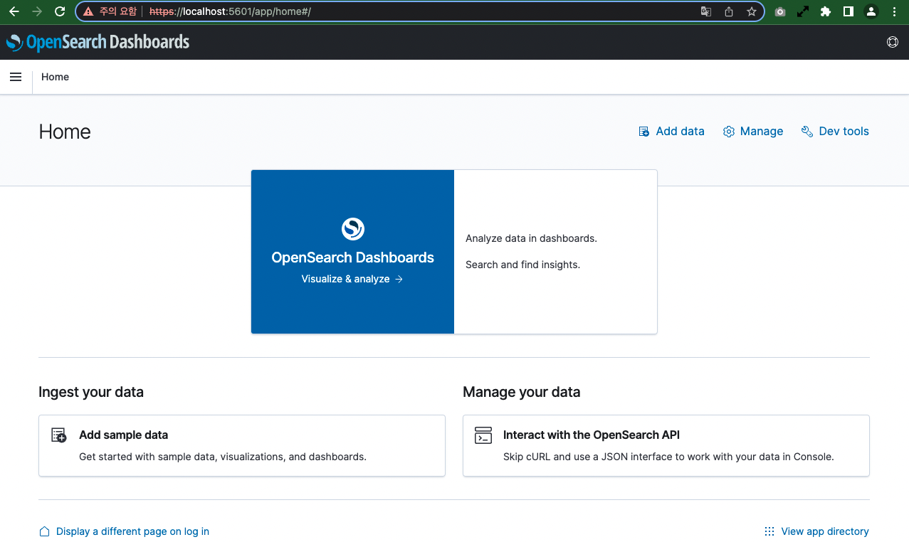
Send log from OKE to OpenSearch
Use OpenSearch and OpenSearch Dashboard instead of ElasticSearch and Kibana in your EFK configuration.
Fluentd configuration
-
Create a Service Account for Fluentd installation and define the relevant permissions.
-
configmap to define additional settings
- Fluentd-related settings are all defined in a .conf file under /fluentd/etc/ in the container. You can override these files.
- OCI OpenSearch clusters now use Self Signed certificates by default. Leave only the basics that are absolutely necessary for the connection. If you leave the commented out part and don’t set a value, you will get an error at run time.
-
Define a fluentd damonset
- Some changes have been made to the YAML in the Fluentd documentation to use the configured configmap.
- We are changing to use fluent.conf overridden by configmap.
- You are setting up the Self Signed CA used by the OpenSearch Dashboard.
Register Self Signed CA used by OpenSearch Dashboard
-
Go back to the jumpbox VM connected via SSH.
-
Download Self Signed CA of OpenSearch Endpoint with the following command.
- OpenSearch API Endpoint in the cluster
openssl s_client -showcerts -connect ${OPENSEARCH_API_ENDPOINT}:9200 </dev/null | sed -n -e '/-.BEGIN/,/-.END/ p' > opensearch-ca.crt- Execution example
opc@jumpbox ~]$ openssl s_client -showcerts -connect amaaaaaauzduwfyafs5lx2a77vnnbvz5wt6gbez6r3apldbqzn725kszn2xq.opensearch.ap-chuncheon-1.oci.oracleiaas.com:9200 </dev/null | sed -n -e '/-.BEGIN/,/-.END/ p' > opensearch-ca.crt depth=2 CN = Mission Control Root CA (transitional) verify error:num=19:self signed certificate in certificate chain verify return:1 depth=2 CN = Mission Control Root CA (transitional) verify return:1 depth=1 OU = opc-device:f7:4a:0c:95:4a:8d:a6:06:a2:1c:d2:12:40:6b:61:ae:c3:a0:e2:4c:ca:7b:3e:df:94:85:cc:39:a4:92:df:93, CN = PKISVC CrossRegion Intermediate r2 verify return:1 depth=0 CN = *.opensearch.ap-chuncheon-1.oci.oracleiaas.com verify return:1 DONE [opc@jumpbox ~]$ cat opensearch-ca.crt -----BEGIN CERTIFICATE----- MIIE6TCCAtGgAwIBAgIRAOstTmVRjci44g910KG8+YMwDQYJKoZIhvcNAQELBQAw ... 2cTH4OwgiUBHOzI8tQ== -----END CERTIFICATE----- -----BEGIN CERTIFICATE----- MIIFxTCCA62gAwIBAgIRAM/DvpKazV/tYwL/TDrInwIwDQYJKoZIhvcNAQELBQAw ... 37v4yd3CKzhwvmSed7aUsCofDN2WtcVgAp7GA/l12kb+EEafun7QaQI= -----END CERTIFICATE----- -----BEGIN CERTIFICATE----- MIIFQzCCAyugAwIBAgIBAjANBgkqhkiG9w0BAQsFADAxMS8wLQYDVQQDEyZNaXNz ... j3tjZCAkyg== -----END CERTIFICATE----- -
Copy the downloaded opensearch-ca.crt file to a location accessible to the target OKE cluster with kubectl.
-
Add the CA as configmap to the OKE cluster with the following command:
kubectl create configmap opensearch-ca.crt --from-file=opensearch-ca.crt -n kube-system
Install FluentD
-
In fluentd-daemonset-opensearch.yaml, change FLUENT_OPENSEARCH_HOST to the target OpenSearch host.
... env: - name: FLUENT_OPENSEARCH_HOST value: "amaaaaaauzduwfyafs5lx2a77vnnbvz5wt6gbez6r3apldbqzn725kszn2xq.opensearch.ap-chuncheon-1.oci.oracleiaas.com" - name: FLUENT_OPENSEARCH_PORT value: "9200" ... -
Install FluentD
kubectl apply -f fluentd-rbac.yaml kubectl apply -f fluentd-configmap-opensearch.yaml kubectl apply -f fluentd-daemonset-opensearch.yaml -
Add a security rule to send logs from OKE cluster Worker Node to OpenSearch.
-
Worker Node security rules
-
Target: ex) oke-nodeseclist-quick-oke-cluster-1-04cdcc334
-
Egress Rules:
The example below is when the OpenSearch location is subnet 10.0.20.0/24.
Stateless Destination IP Protocol Source Port Range Destination Port Range Description No 10.0.20.0/24 TCP All 9200 OpenSearch API
-
-
Security rules of OpenSearch
-
Target: ex) oke-svclbseclist-quick-oke-cluster-1-04cdcc334
-
Ingress Rules:
In the example below, if the Worker Node is in the subnet 10.0.10.0/24,
Stateless Source IP Protocol Source Port Range Destination Port Range Description No 10.0.10.0/24 TCP All 9200 OpenSearch API -
-
-
Check the log
When the fluentd Pod starts up, check the log to see if it operates normally without any connection errors with OpenSearch.
$ kubectl get pod -n kube-system NAME READY STATUS RESTARTS AGE ... fluentd-bz62z 1/1 Running 0 99s fluentd-c54qn 1/1 Running 0 99s fluentd-x5l2h 1/1 Running 0 99s ... $ kubectl logs -f fluentd-t7p87 -n kube-system -f 2022-06-03 07:28:46 +0000 [info]: parsing config file is succeeded path="/fluentd/etc/fluent.conf" ... 2022-06-03 07:28:48 +0000 [info]: adding match pattern="**" type="opensearch" ... 2022-06-03 07:28:48 +0000 [info]: #0 starting fluentd worker pid=15 ppid=7 worker=0 2022-06-03 07:28:48 +0000 [info]: #0 [in_tail_container_logs] following tail of /var/log/containers/kube-flannel-ds-stmfq_kube-system_install-cni-f69fde150aaaf779132c4fc2f2315fc30e703e9e6c39127be21fbec137d7b735.log 2022-06-03 07:28:48 +0000 [info]: #0 [in_tail_container_logs] following tail of /var/log/containers/proxymux-client-p7nzp_kube-system_proxymux-client-fa4352b8f7ba57325ea3ef2dc6af8016a585df67a0f870058f76761b75c074e7.log
OpenSearch Dashboard Settings
-
If you have not connected to the jumpbox VM through SSH tunneling, reconnect.
-
Since SSH tunneling is done, check the connection to the OpenSearch Dashboard with a browser locally.
- Access address: https://localhost:5601
-
In the upper left navigation menu, click OpenSearch Dashboards > Discover.
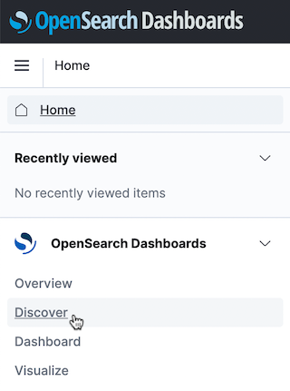
-
Click Create index pattern.
-
Create an index pattern.
Among the three sources shown below, we use the fluentd source.
- Index pattern name: fluentd
- Time field: time
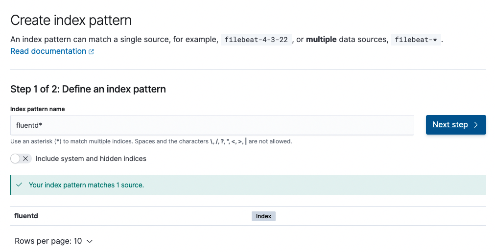
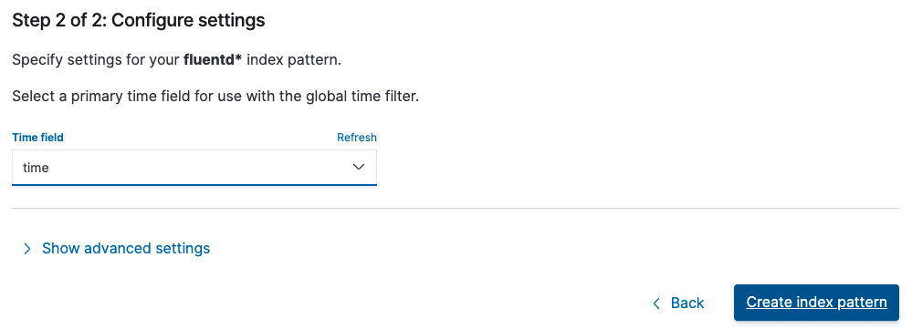
-
You can see the result of adding the index pattern.
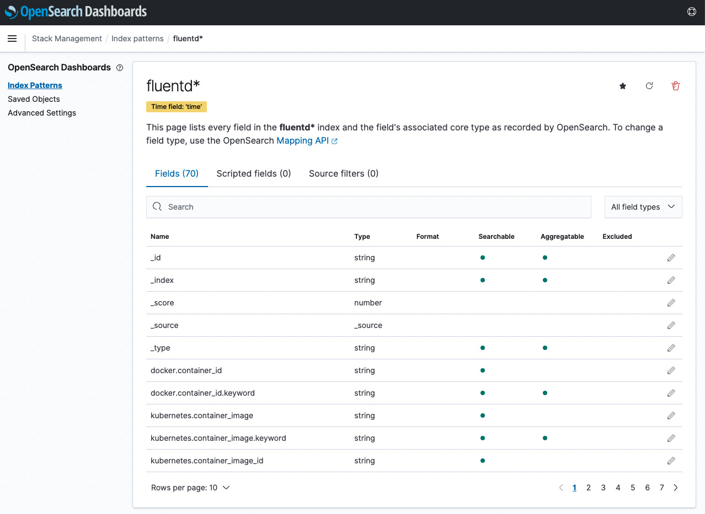
-
Click OpenSearch Dashboards > Discover in the upper left navigation menu.
-
You can check the collected logs through the created index pattern.
- To check the log of the test app, click Add filter to specify namespace_name=default .
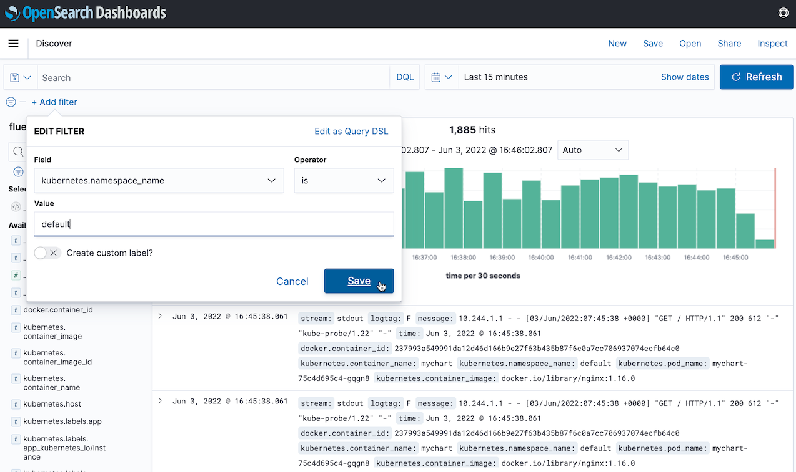
-
Access the test app.
-
Check the log
You can check the log of the test app in the OpenSearch Dashboard as shown below.
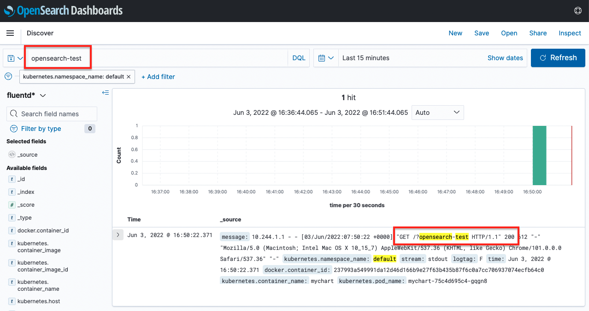
As an individual, this article was written with my personal time. There may be errors in the content of the article, and the opinions in the article are personal opinions.